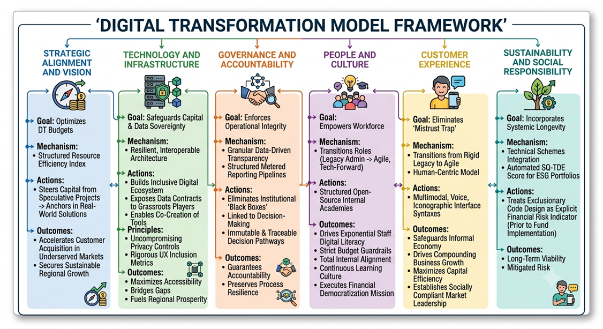

Building Ethical Digital Transformation
The SQ-EDT framework consists of six interconnected columns that work together to create a sustainable, ethical approach to digital transformation. Each column represents a critical dimension of responsible technology adoption.
Strategy and Vision
Optimizes digital transformation budgets through a structured resource efficiency index. By steering capital away from speculative projects and anchoring it in solutions built for real-world user needs, this pillar accelerates customer acquisition within underserved markets and secures sustainable regional growth.
Technology and Architecture
Safeguards public capital and regional data sovereignty through a highly resilient, interoperable architecture. This framework builds an inclusive digital ecosystem by securely exposing data contracts to grassroots economic players, enabling them to co-create tailored tools for informal commerce.
Guided by uncompromising privacy controls and rigorous user experience inclusion metrics, this pillar ensures every technical deployment maximizes accessibility, bridges systemic infrastructure gaps, and fuels sustainable regional prosperity.
Governance
Enforces operational integrity through granular, data-driven transparency mechanisms. This column eliminates institutional "black boxes" by implementing structured, metered reporting pipelines directly linked to decision-making levels. By establishing immutable, traceable decision pathways and robust data sovereignty controls, the framework guarantees complete accountability and preserves process resilience under severe regional and operational constraints.
People and Culture
Empowers the internal workforce by transitioning employee roles from rigid, legacy administrative tasks to agile, tech-forward responsibilities. Through structured, open-source internal academies, the framework drives exponential staff digital literacy while maintaining strict budget guardrails. This ensures total internal alignment, builds a culture of continuous learning, and establishes an active workforce that seamlessly executes the bank’s broader financial democratization mission.
Customer Experience
Eliminates the "Mistrust Trap" by transitioning the bank from rigid, top-down legacy workflows to an agile, human-centric delivery model. Through scientifically backed multimodal, voice, and iconographic interface syntaxes, the framework systematically safeguards the informal economy from digital disenfranchisement.
This strategic inclusion drives compounding business growth, maximizes capital efficiency, and establishes the bank as a pioneering, socially compliant market leader in developing economies.
Sustainability and Social Responsibility
Incorporates systemic longevity directly into technical schemes through an automated SQ-TDE score for ESG portfolios, treating exclusionary code design as an explicit indicator of financial risk prior to fund implementation.
How It Works Together
The six columns aren't isolated elements, they form an integrated system where each column supports and reinforces the others. This creates a holistic approach to ethical digital transformation that ensures consistency across all aspects of your organization.

Getting Started
Ready to implement the framework in your organization? Our consultants can help you:
- Assess your current state across all six columns
- Identify gaps and opportunities
- Develop a customized implementation roadmap
- Build internal capability for sustainable transformation
Ready to Learn More?
Explore our services or read our latest insights about ethical digital transformation.